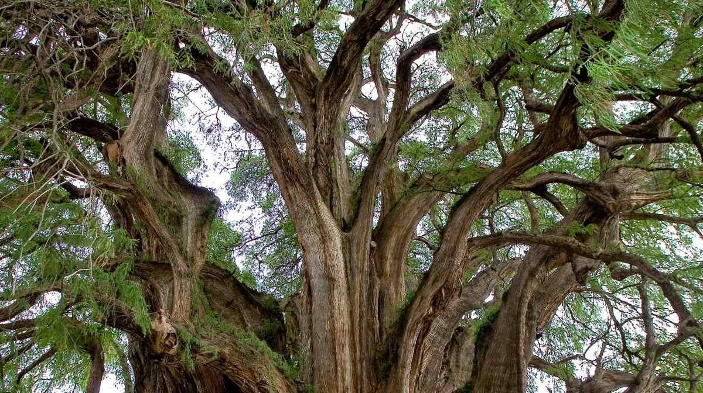
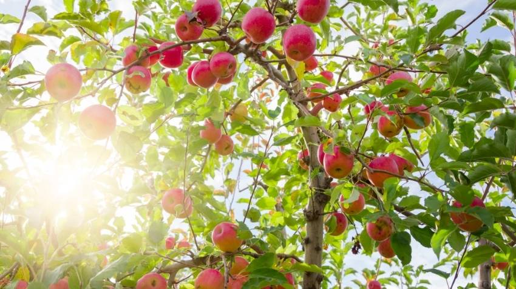

Ahuahuete
Nombre científico: Taxodium mucronatum
Características: Es un árbol mexicano majestuoso y longevo, conocido por su gran tamaño (hasta 40m), corteza fibrosa y su amor por el agua, creciendo cerca de ríos y manantiales
Cuidados: requiere pleno sol y riego abundante, especialmente en macetas, y aunque es resistente, necesita espacio para sus raíces y se beneficia de poda ligera

Limon
Nombre científico: Citrus limon.
Características: Es un árbol o arbusto perenne, que generalmente no supera los 4 metros de altura, aunque puede alcanzar hasta 8 metros en condiciones óptimas. Posee ramas delgadas con espinas cortas y duras.
Cuidados: proporciónale mucho sol (6-8 horas), riega frecuentemente pero sin encharcar, asegurando buen drenaje, y usa un sustrato ligeramente ácido; abona regularmente y realiza una poda anual para airear y dar forma, controlando plagas como cochinillas o pulgones.

Pera
Nombre científico: Pyrus communis.
Características: El árbol de pera es un árbol frutal caducifolio de tamaño mediano a grande, que puede alcanzar entre 5 y 20 metros de altura. Presenta una copa redondeada o piramidal, hojas simples de forma ovalada y color verde brillante que caen en otoño, y flores blancas ligeramente rosadas que aparecen en primavera.
Cuidados: El peral necesita crecer en climas templados, con inviernos fríos que le permitan cumplir sus horas de reposo, y debe plantarse en un lugar con plena exposición al sol. Requiere suelos profundos, fértiles y bien drenados, con riego moderado pero constante, evitando el encharcamiento.

Durazno
Nombre científico: Prunus persica.
Características: árbol caducifolio de tamaño pequeño a mediano (hasta 6-8m) con hojas lanceoladas, flores rosadas/rojas, y un tronco delgado y grisáceo.
Cuidados: necesita sol directo (6-14 horas), riego regular pero no excesivo (dependiendo del suelo y clima), y poda anual para airear el centro y fomentar la fruta, eliminando ramas viejas y las que se cruzan. Es fundamental un suelo bien drenado con materia orgánica y fertilización en primavera y verano, además de controlar plagas como pulgones o ácaros, y protegerlo de heladas fuertes.

Manzana
Nombre científico: Malus domestica
Características: su copa redondeada y ramas horizontales, hojas ovales dentadas, flores blancas o rosadas en primavera, y sus frutos carnosos (manzanas) que maduran en otoño.
Cuidados: bríndale luz solar directa (mínimo 6 horas), un suelo rico y bien drenado (pH 6.0-7.0) que retenga humedad sin encharcarse, y riego constante, especialmente en floración y fructificación. Realiza una poda anual en invierno para dar forma y eliminar ramas viejas/dañadas, abona en primavera y otoño con fertilizante equilibrado, y vigila plagas como el moteado.
Higo
Nombre científico:Ficus carica
Características: árbol caducifolio rústico, de corteza grisácea y lisa, hojas grandes, lobuladas y ásperas, que produce una densa sombra y un látex lechoso irritante.
Cuidados: necesita sol pleno, riego moderado (más en verano, menos en invierno, siempre con buen drenaje para evitar podredumbre), suelo fértil con materia orgánica, y poda ligera para mantener forma y aireación; tolera la sequía pero el exceso de agua es fatal para sus raíces, y necesita protección contra heladas fuertes y vientos fríos.

Ayacahuite
Nombre científico: Pinus ayacahuite.
Características: pino alto de tronco recto, copa piramidal, hojas suaves en fascículos y conos muy largos colgantes, valorado por su madera blanquecina o amarillenta, suave a semidura, excelente para carpintería, y resistente a heladas.
Cuidados: pleno sol, suelo bien drenado y riego moderado, crucial en etapas jóvenes para establecerse, volviéndose tolerante a la sequía al madurar. Se beneficia de fertilizantes balanceados y poda invernal para eliminar ramas muertas, mientras que su madera requiere secado bajo techo para evitar rajaduras, siendo ideal para uso ornamental y rústico.
Importancia de los Árboles en el Plantel
Los árboles en el TESJI no solo embellecen el entorno, también brindan sombra, mejoran la calidad del aire y fomentan la conciencia ecológica entre los estudiantes. Son parte fundamental de la vida académica y contribuyen al bienestar de toda la comunidad.